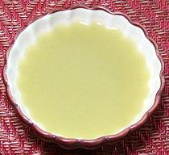

 |
VerjusEurope, Near and Middle East | ||||
| Makes: Effort: Sched: DoAhead: |
2 cups ** 30 min Yes |
Verjus was an important souring agent in Europe from the time of Ancient Greece to around 1900, when vinegar production ramped up - but it is still occasionally used in France for its unique flavor. | |||
| Verjus is much used in Anatolia and Caucasus, as well as the Near and Middle East. It is available bottled from California and Perigord, France, but it costs a lot less to make your own. | |||||
|
2 |
# |
Sour Grapes (1) |
Make - (30 min)
|